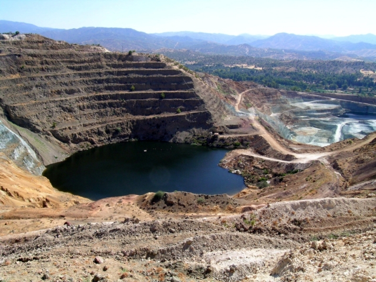

Figure 15: Skouriotissa mine, looking south-west. The Karkotis Valley is the first valley above the grey pit, with Pano Limna (TS15) at the base of the ridge. Photograph: Kristina Winther Jacobsen.

© Internet Archaeology/Authors
URL: http://intarch.ac.uk/journal/issue20/4/tof.htm
Last updated: Thur July 5 2007